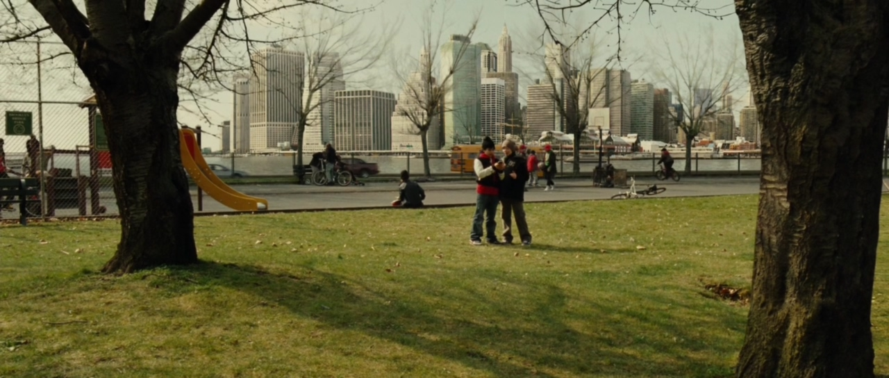
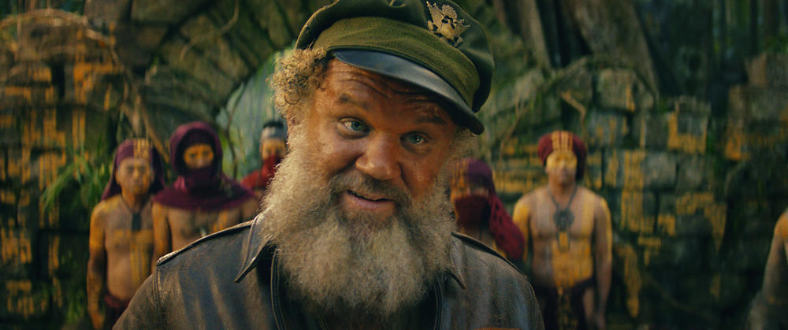
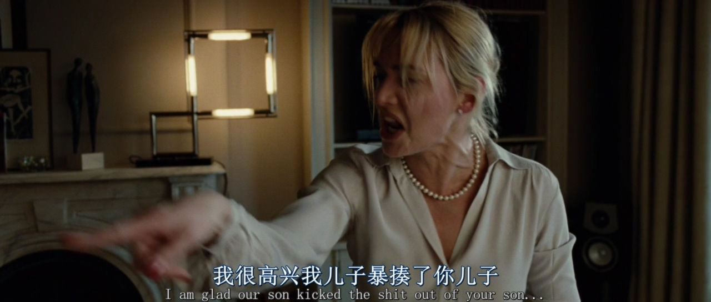
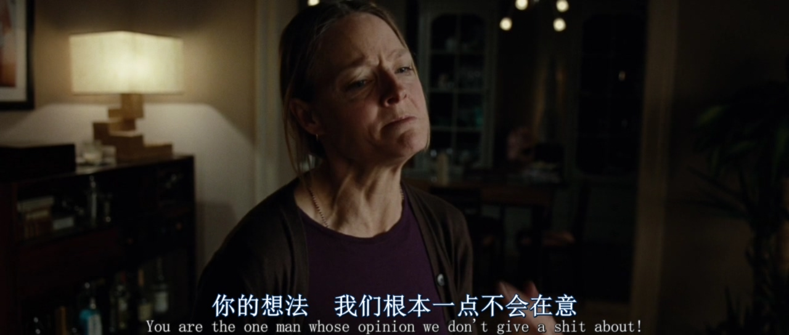
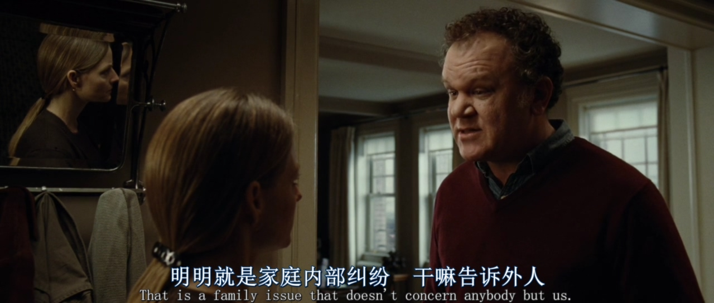
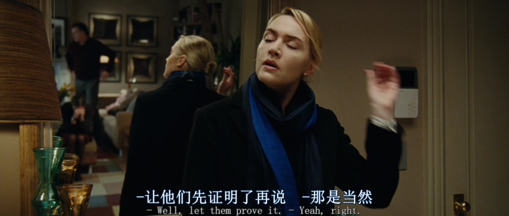

撕下虚伪的面具，来呀，互相伤害呀！丨《杀戮》观后感
2017-06-25 浏览次数 2370
by zhangwuji18
《杀戮》Carnage （2011）
导演：罗曼·波兰斯基
主演：朱迪·福斯特 凯特·温斯莱特
主演：克里斯托弗·瓦尔兹 约翰·C·赖利
IMDb：7.2 豆瓣：8.2
平凡的一天，名叫扎克利和伊森的小男孩在某公园内发生争执，前者用棍子将后者的嘴打破。这起不大不小的儿童纠纷，将两对本没有任何交集的夫妇拉到了一起。经营小百货商店的麦克·朗斯特里特（约翰·C·赖利 John C Reilly 饰）与身为作家的潘妮洛普（朱迪·福斯特 Jodie Foster 饰）是伊森的父母，他们在家中迎来扎克利的父母——律师艾伦·考温（克里斯托弗·沃尔兹 Christoph Waltz 饰）以及投资经纪人南希（凯特·温斯莱特 KateWinslet 饰）——的拜访。他们就孩子的伤害事件协商、讨论、争执、冷嘲热讽、旁敲侧击，时而强作欢颜，时而面露不快，可是又不得不面对面度过这难熬与痛苦的一天……
——摘自豆瓣电影
本片是改编自法国新锐女作家雅丝米娜·雷札的剧本《杀戮之神》（The God of Carnage）。在拍成电影之前已经是名满天下的话剧了。之所以提这么一句，就是因为一般话剧改编成的电影大都是场景单一，主要依靠精彩的台词来吸引观众，之前获得奥斯卡最佳影片提名的《藩篱》就是非常典型的话剧改编电影（什么，你说《夏洛特烦恼》？）
本片也不例外，除了开头和结尾处了两个长镜头展示两个孩子之间的关系外，所有的场景均发生在挨打小孩的家中，而演员就是海报上的四位主演，外加一些引发冲突的小道具，一部电影就这样完成了。
这时候肯定会有人产生疑问，这片为什么叫《杀戮》？相信看过本片之后你才可能会片名有些理解。起因不过是两个孩子之间的打架，影片的开场双方父母也都比较绅士、体面的在沟通问题，但是就道歉方式开始产生了分歧，接下来人类社会所谓的“体面”的面具一层层揭下，问题从孩子转移到了大人身上，从教育子女的方法上变成了人身攻击，每一位主演都与另外三人互相进行了攻击，夫妻之间多年的积怨与不满也随之爆发。伴随着咖啡、蛋糕、酒精、雪茄的刺激催化下，四个人彼此仿佛是赤膊上阵，杀红了眼。而最为讽刺的是，两对父母起初最担心的孩子问题，而在片尾得到了非常讽刺的解决。
本片的海报上每个人的不同的三个阶段，就是对剧情进展最好的诠释。
看点1:强大的主创阵容
导演罗曼·波兰斯基，犹太人，2003年凭借《钢琴师》获得奥斯卡最佳导演，然而却因为1977年的一次“性骚扰”事件，被美国通缉，无法去美国领奖，最后是好友哈里森·福特代领。我还是之前的观点，作品跟本人要分开对待，当年事件真相我们不得而知，但是现在的作品我们可以欣赏。
对导演的评价，应该就是“天才”。童年母亲死于纳粹集中营，后来有身孕在身的妻子被邪教教徒残忍的杀害，经历过这些，波兰斯基拍摄出来的故事看起来更值得玩味。
至于四位主演，也都是奥斯卡级别的演员，朱迪·福斯特两次影后（《暴劫梨花》《沉默的羔羊》）、凯特·温斯莱特一次影后（《朗读者》，当然你们肯定还是更熟悉《泰坦尼克号》）、克里斯托弗·瓦尔兹两次最佳男配（《无耻混蛋》《被解救的姜戈》），约翰·C·赖利是一次最佳男配提名，不常看电影的朋友应该是在《金刚：骷髅岛》才第一次了解他，饰演美国空军老兵。
看过的话印象应该很深，负责搞笑
这个主演阵容保证了这部全片都是台词的电影在观看时不会无聊，深厚的台词功底以及一流的表演能力，贱亮在看电影的时候脑子里面就是一直在闪着“牛逼、牛逼、牛逼……”从一开始的温文尔雅，到后来的歇斯底里，尤其是两位影后的表现，如痴如醉。
 看点2：有限空间的镜头艺术
上面提到了，影片发生在一间普通的房间中，演员保证了听觉上的不无聊，但是视觉上面如何能让观众不产生审美疲劳则是另一件非常重要的事情。早些年最具代表性的应该是《十二怒汉》，12个陪审员在一个狭小会议室中的唇枪舌剑。
当然本片主演是只有四个，但是导演和摄影师（波兰斯基御用摄像，《钢琴家》也拿了奥斯卡）也面临着相同的考验，从成片上来看，可以称得上是优秀了。
举一个例子，就是房间中的镜子。
 能够看出，镜子很好的扩展了有限的空间，增加了画面的要素。房间内的镜头观众其实经常能够看到，不过就是那么几个机位，正反打。而本片中镜子的妙用则是让人眼前一亮，使得影片在视觉上也不那么无聊。
另外片中也用了很多俯拍、仰拍的镜头，增加的画面的可看性，甚至有时候会感觉眼前一亮。
看点3：小道具的妙用
道具对于影片的意义不言而喻，而本片中导演和编剧对小道具的使用，也增加了电影的可看性。
影片的时长79分钟，影片中的故事也是发生在79分钟里，这种设定一直是我心头大爱。不过之前看过一种说法，就是如何区分情色片和成人A片的区别，就是一般A片的镜头时间与影片时间一致，没有通过镜头切换去快进时间，把滚床单的每一个过程都事无巨细的展示出来。
所以……这么来看这片也许是个A片，哈哈哈哈哈哈哈哈哈！
唯一的问题就是要耐得住性子，毕竟在79分钟的时间里一直嘴炮来的，初级电影爱好者未必坚持的下来。
微信扫二维码关注
或搜索公众号“ JLxunying ”或“ 贱亮寻影 ”关注

当年看行尸走肉第一季，被震惊到了，完全是神剧！看到现在，赶紧一起删了，像老太太裹脚布一样，又臭又长！美剧的运作模式，精品最终都会烂尾！

摩根的事告送我们，哪有什么真正的平静，在这个不那么美好的世界里，做一个不好不坏的人就得了，人不犯我我不犯人，别整天把什么善良挂嘴边，没个球用！！！

I am Winner！
-

全境通告
A.P.B.
8.8
-

衰姐们
Girls
8.8
-

《超感猎杀》第二季海报及预告解析
新闻泽生 1月前
-

《四重奏》| 人与人的关系像是一道复杂的几何题
剧评溺水的大象 1天前
-

《入场券》：假如给我三天光明，我会用来抛妻弃子，出
影评泽生 1小时前
@ Obama
摩根的事告送我们，哪有什么真正的平静，在这个不那么美好的世界里，做一个不好不坏的人就得了，人不犯我我不犯人，别整天把什么善良挂嘴边，没个球用！！！